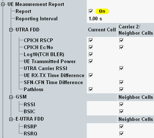

The parameters in this section activate, deactivate and configure the UE measurement report. The report is shown in the main signaling view, see "UE Measurement Report".
This section is not relevant for reduced signaling.

Enable or disable the UE measurement report completely. If reporting is enabled, the instrument requests reports from the UE. The delivery of the requested reports can take some time. The fetch command checks whether the process has been completed or the instrument is still waiting for reports from the UE.
With enabled measurement reporting, the properties of the uplink signal change whenever a report is received, resulting, for example, in power steps. For that reason, it is recommended to disable measurement reports for TX measurements.
When the TPC measurement for inner loop power control pattern ABC, EF, GH is started, the UE measurement reporting is disabled automatically.
Remote command:Sets the interval between two consecutive measurement report messages. Reduce the interval to check whether the UE can cope with a high repetition rate.
Remote command:Enable or disable the evaluation and display of the individual information elements included in the UE measurement report message. The purpose of this section is to adjust the measurement report to the UE capabilities.
If a multi-carrier scenario is active, the reports consist of different information elements which can be enabled or disabled per carrier. "Current Cell" corresponds to carrier 1.
In the settings related to the neighbor cell measurement, at least one of the quantity parameters (CPICH RSCP, CPICH Ec/No) must be selected to enable neighbor cell measurement in general. The enabling for each individual neighbor cell is possible, see Figure "Neighbor cell configuration dialog".
Option R&S CMW-KS410 is required for the neighbor cell measurement.
Remote command:Generally enable or disable the evaluation and display of the individual information elements related to neighbor cells. This information is included in the UE measurement report message. For the UE report settings of each neighbor cell individually, see Figure "Neighbor cell configuration dialog". The purpose of this section is to adjust the measurement report to the UE capabilities.
Note, that for GSM BSIC measurements the RSSI measurements must be active.
Option R&S CMW-KS410 is required.
Remote command: